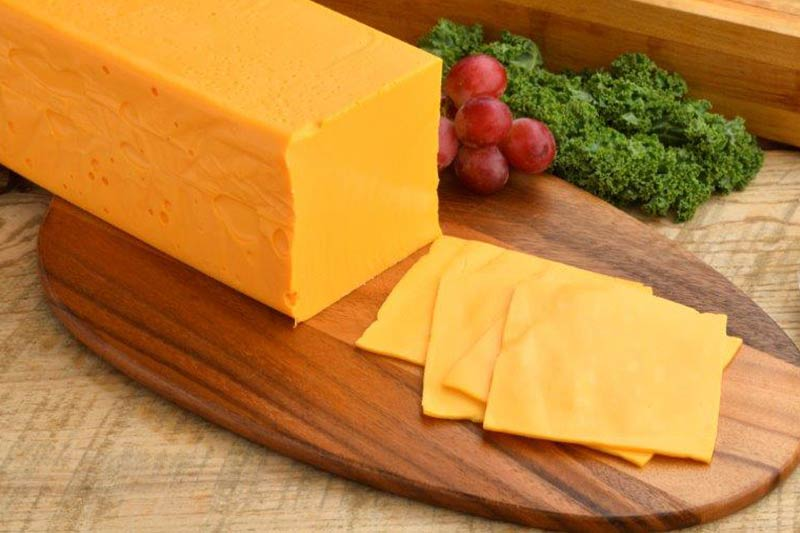

Overview of American Cheese
Definition and Composition
American cheese is a type of processed cheese that is primarily made from cheddar, Colby, or similar cheeses. It incorporates emulsifying agents such as sodium citrate, which allows the cheese to be pasteurized without the components separating. The resulting product has a mild flavor, creamy texture, and a low melting point, making it ideal for various culinary applications. American cheese typically appears in yellow or white varieties; the yellow version is often colored with annatto.
Historical Background
The origins of American cheese can be traced back to British colonists who began making cheddar cheese shortly after arriving in North America. By 1790, American-made cheddars were being exported back to England. The term “American cheese” was first documented in 1804 in a Kentucky newspaper. In the early 20th century, James L. Kraft patented a method for manufacturing processed cheese in 1916, leading to the widespread popularity of what we now recognize as American cheese.
Production Process:
The production of American cheese involves grinding traditional cheeses and mixing them with emulsifying agents and other ingredients. This mixture is then heated to at least 150 °F (66 °C) for a minimum of 30 seconds during pasteurization. The composition requirements dictate specific percentages of milkfat, moisture, salt, and pH value in the final product.
Types and Regulations
American cheese can be categorized into several types based on its composition:
- Pasteurized Process Cheese: Made from one or more cheeses with optional dairy or non-dairy ingredients.
- Pasteurized Process Cheese Food: Contains at least 51% cheese along with other dairy ingredients.
- Pasteurized Process Cheese Product: Lacks strict regulations regarding its composition.
To be labeled as “American cheese,” it must meet specific standards set by the U.S. Code of Federal Regulations.
Culinary Uses
American cheese is widely used in sandwiches due to its versatility and meltability. It is famously associated with cheeseburgers and grilled cheese sandwiches because it melts smoothly without becoming greasy or clumpy. Additionally, it is commonly used in breakfast dishes like omelets and scrambled eggs, as well as in macaroni and cheese recipes.
In summary, American cheese is a processed product that has become an integral part of American cuisine due to its unique properties and historical significance.